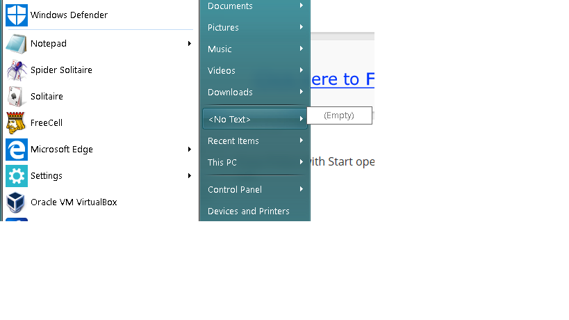
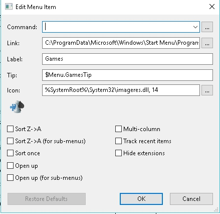

| Classic Shell http://www.classicshell.net/forum/ |
|
| "<no text>" in Windows 10 1803 http://www.classicshell.net/forum/viewtopic.php?f=7&t=8438 |
Page 1 of 1 |
| Author: | dfm0 [ Fri May 04, 2018 10:11 am ] |
| Post subject: | "<no text>" in Windows 10 1803 |
Hi, After updating to Windows 10 1803 the Windows 7 Style menu is showing "<no text>" in place of "Games" and it is empty.  |
|
| Author: | Jcee [ Fri May 04, 2018 2:51 pm ] |
| Post subject: | Re: "<no text>" in Windows 10 1803 |
Yes, this issue has been posted; and it seems the shell:Games folder has been removed from windows. so naturally classic shell has nothing to link you to. This is unlikely to get fixed anytime soon as classic shell is in abandonware limbo waiting for someone to take over the reigns |
|
| Author: | dfm0 [ Fri May 04, 2018 7:28 pm ] |
| Post subject: | Re: "<no text>" in Windows 10 1803 |
When I shift click on the menu I see the games folder in the Windows 10 menu. Is there another folder that was removed in 1803? |
|
| Author: | dfm0 [ Sat May 05, 2018 8:42 am ] |
| Post subject: | Re: "<no text>" in Windows 10 1803 |
I was able to get it to work. In Classic Shell Settings, Customize Start Menu click on Games, select Custom from drop down menu, then right click on Custom then edit, then:  Command is empty Link: C:\ProgramData\Microsoft\Windows\Start Menu\Programs\Games Label: Games Tip: $Menu.GamesTip Icon: %SystemRoot%\System32\imageres.dll, 14 |
|
| Page 1 of 1 | All times are UTC - 8 hours [ DST ] |
| Powered by phpBB® Forum Software © phpBB Group https://www.phpbb.com/ |
|